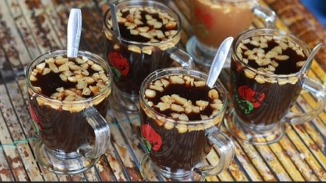

Air guraka atau aer guraka merupakan minuman herbal tradisional Maluku Utara, tepatnya di Ternate yang telah diwariskan dan dikonsumsi secara turun temurun baik sebagai penghangat tubuh maupun penambah stamina. Guraka sendiri berarti jahe dalam bahasa Ternate.
Resep Air Guraka
50 Gram jahe merah
500 Gram gula merah
50 Gram gula pasir
1 Batang serai
1 Liter air
25 Gram kacang kenari atau almond (Untuk garnish)